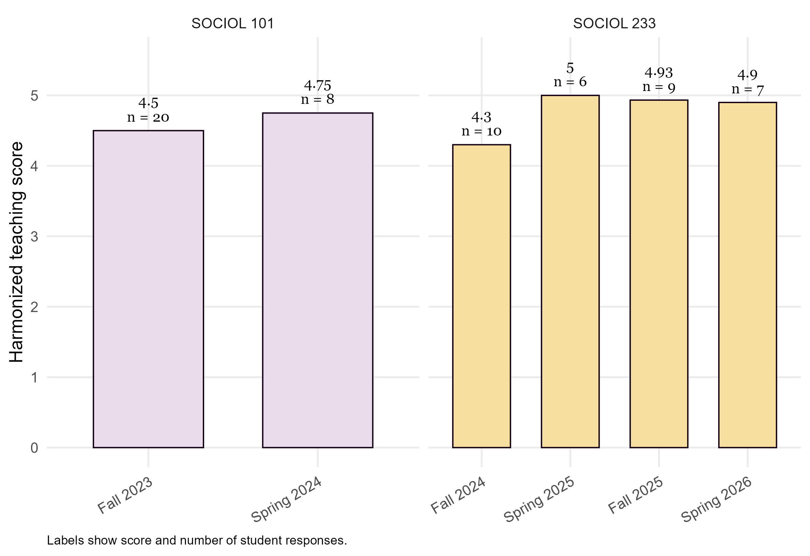
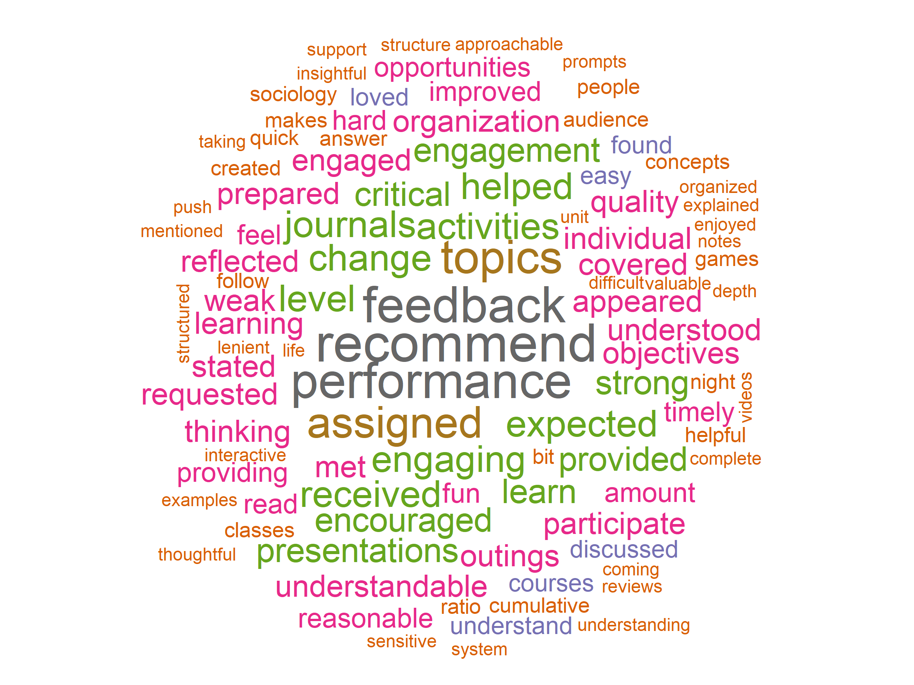
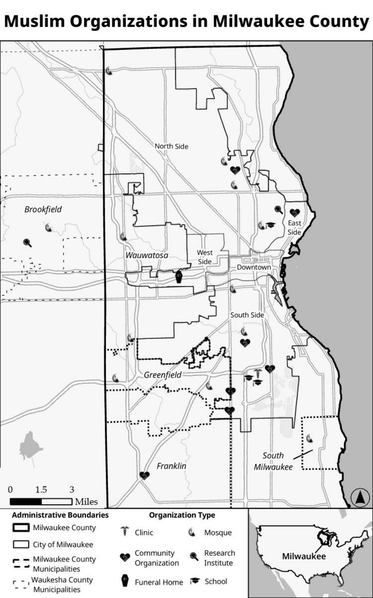
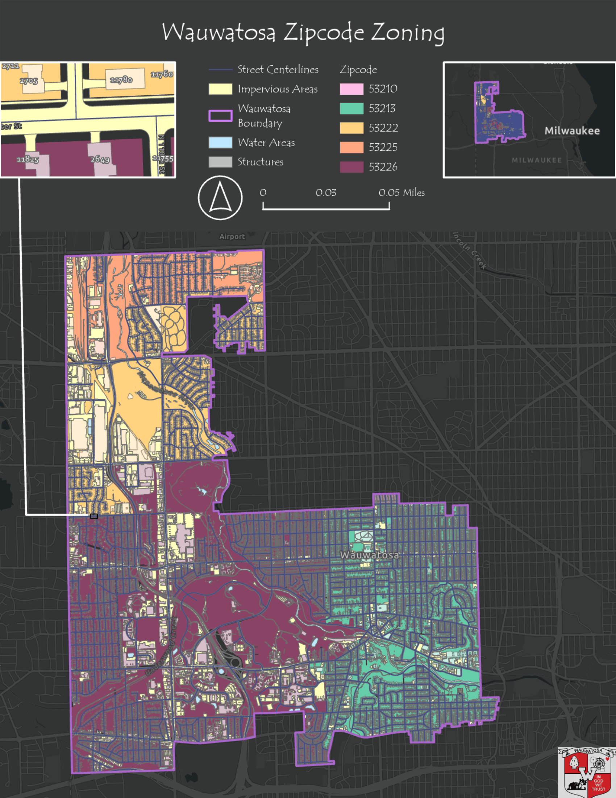
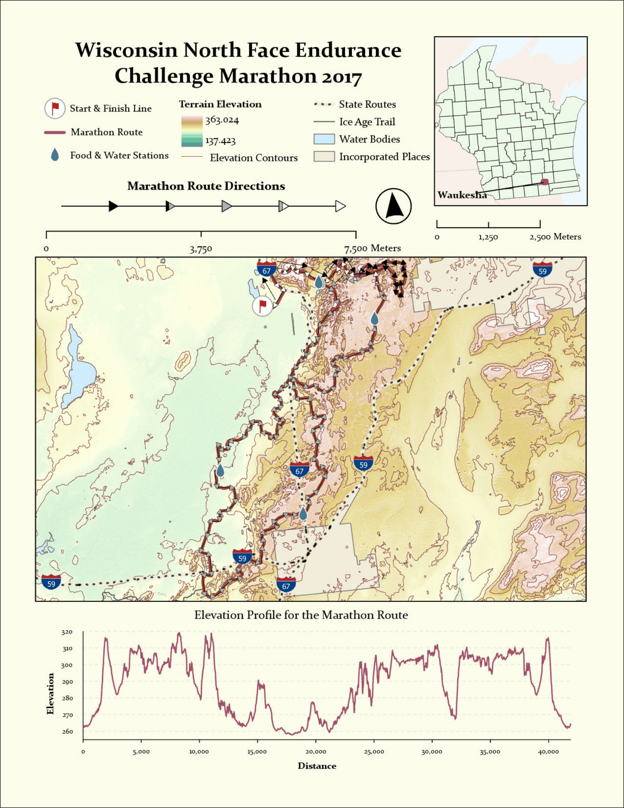
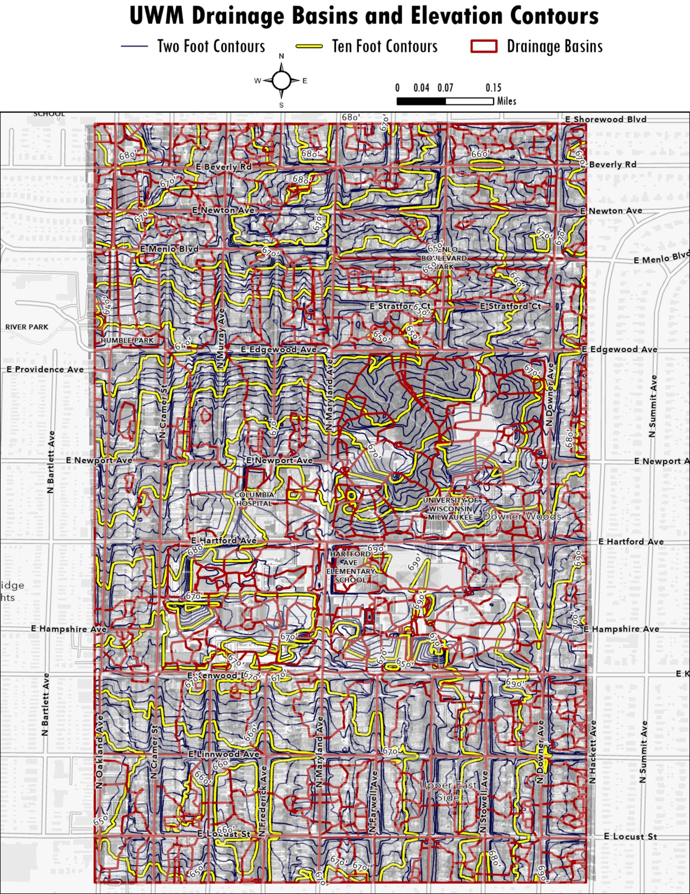
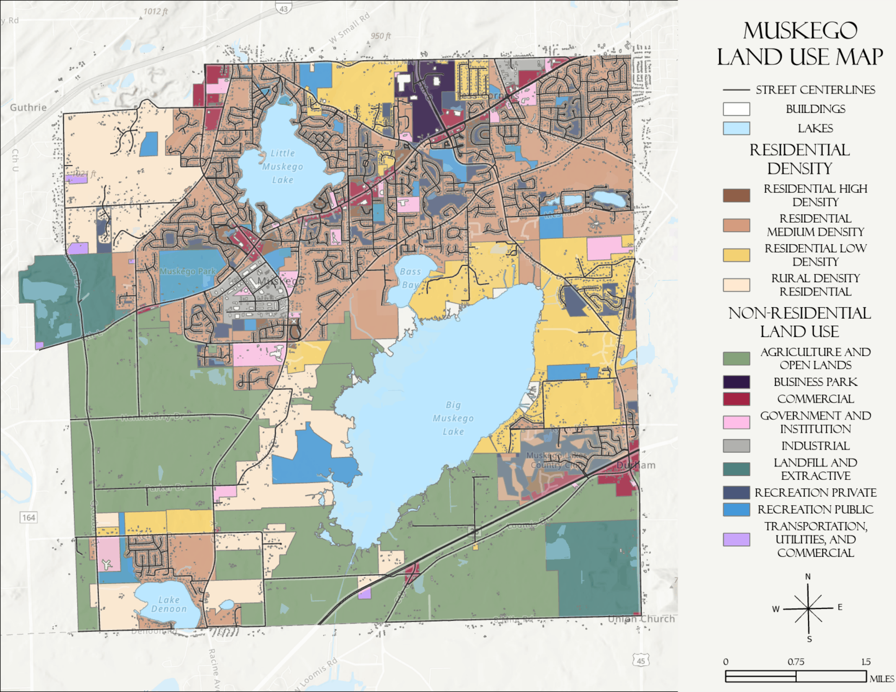
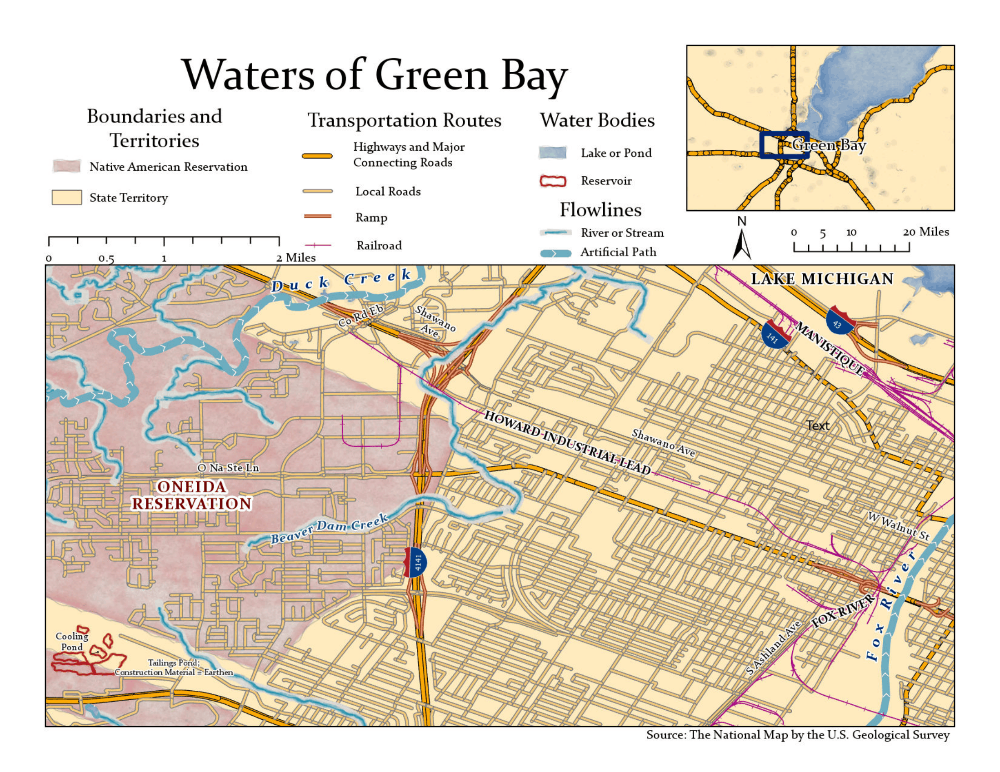
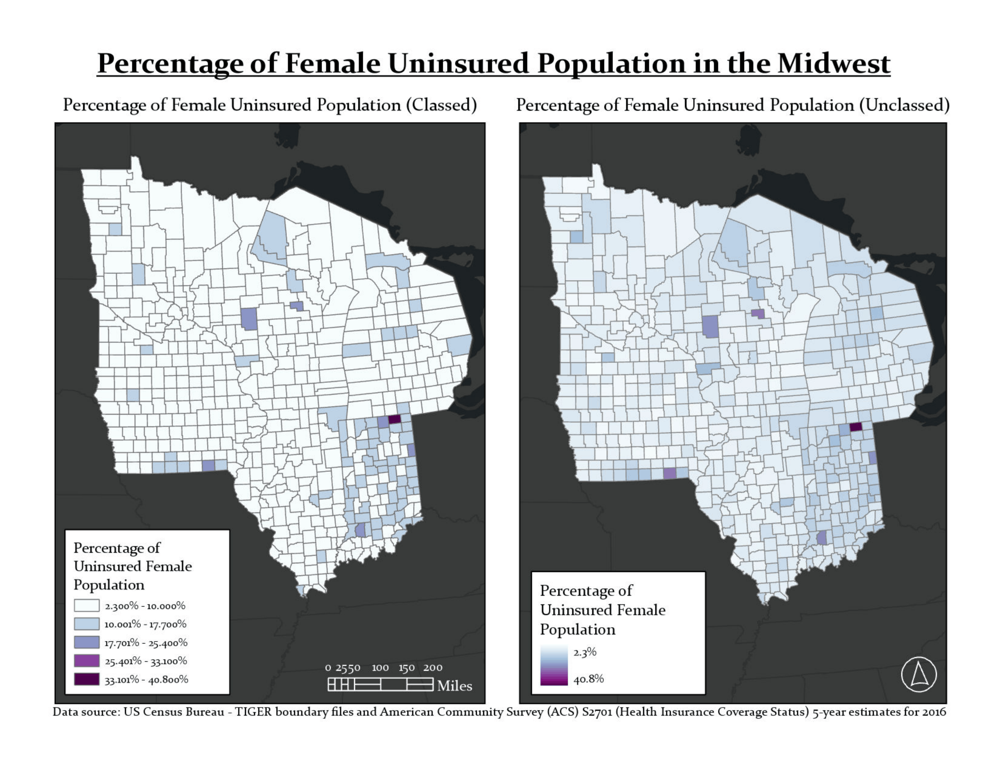
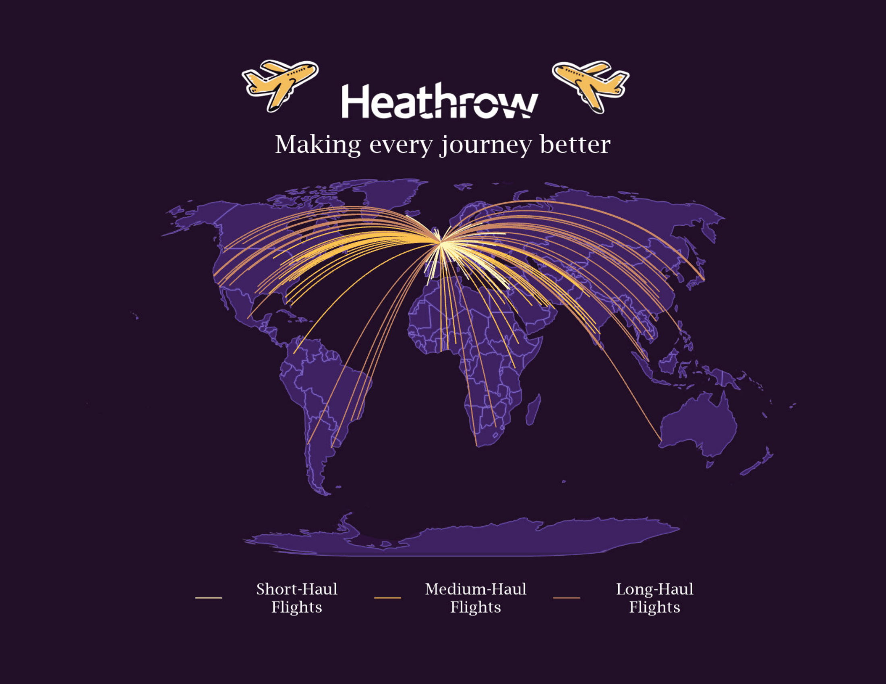

WOW! You are teaching me things I NEVER knew about!!! I may never have seen this stuff or had to use it before...... BUT with the help you have provided, I DEFINITELY figured it out! THANK YOU SOOOO MUCH (I am trying not to tear up) for ALL OF YOUR HELP and your patience and assistance! You have really been patient and understanding, and I appreciate this so very much!!!
Student in SOCIOL 224, Summer 2024
Elizaveta (Liz) Lepikhova (she/they):
Social Justice Educator, GIS Enthusiast, Versatile Artist
✦
 ✦
✦
✦
Language Proficiency
Russian (Native)
English (C2, Proficient)
French (B2, Upper Intermediate)
Japanese (A2, Basic Beginner)
ASL (beginner)
Research &
Teaching Interests
Sociology of Inequality,
Sociology of Race and Ethnicity,
GIS & Digital Mapping,
Sociological Theory,
Urban Studies & Urban Planning,
Deviance, Sociology of Time,
Social Anthropology,
Demography,
(Socio)linguistics,
Philosophy
Software Experience
R/RStudio, Stata,
SPSS, Python,
NVivo, ATLAS.ti,
ArcGIS, QGIS,
HTML, CSS, JavaScript,
Git, GitHub,
Microsoft Office, Canva,
Zoom, Teams
Education
University of Wisconsin-Milwaukee, Milwaukee, WI
2021-2027
[Expected] Sociology Ph.D., fully funded
Carthage College, Kenosha, WI
2024-2026
Master of Education, fully funded
University of Wisconsin-Milwaukee, Milwaukee, WI
2022-2024
Graduate Certificate in Geographic Information Systems
University of Wisconsin-Milwaukee, Milwaukee, WI
2019-2021
Master of Arts in Sociology, fully funded
University of Winnipeg, Winnipeg, Manitoba
2018 (January - April)
Selected courses as an exchange student
Higher School of Economics, Moscow, Russia
2015-2019
Bachelor's in Sociology, Minor in Urban Studies; Red Diploma / Cum Laude
Honors and Awards
2027
Selected Osher Lifelong Learning Institute (OLLI) Scholar
2026-2027
UW-Milwaukee Graduate Student Excellence Fellowship
2026
ASA Doctoral Dissertation Research Improvement Grant (ASA DDRIG) Recipient
2025
UW-Milwaukee Sociology Teaching Award
2024-2026
Segal AmeriCorps Education Award via Teach for America (TFA)
2023
UW-Milwaukee Teacher Excellence Award Shoutout
2021-2022
UW-Milwaukee Chancellor’s Graduate Student Award
2019-2020
UW-Milwaukee Chancellor’s Graduate Student Award
2017
First place with the collective project “Aging in Contemporary Society” at the HSE Social Sciences Winter School
2017
Nominee for the “Golden Height” award from the Faculty of Social Sciences in the “Silver Nestling” nomination
Published Work
-
2026 Lepikhova, E. (2026). Locations of major Islamic centers and organizations in Milwaukee [Map].
In A. M. McGinty, C. Seymour-Jorn, & K. M. Sziarto, Muslims in Milwaukee:
Placemaking, Belonging, and Activism.
Syracuse University Press. - 2021 Lepikhova, E. (2021). Podcast review: Give Theory a Chance. Teaching Sociology, 49(4), 422-425. https://doi.org/10.1177/0092055x211049268
- 2021 Lepikhova, E. (Guest). (2021, June 11). Give Theory a Chance: Peter Berger and Thomas Luckmann. [Audio podcast].
Media and Project Mentions
-
2026 American Geographical Society. 2026. “The AGS Globe: The Millionth Map of Milwaukee.” The AGS Globe, April 15. Feature highlighting the author's work at the American Geographical Society Library.
Retrieved July 26, 2026 Read feature
Manuscripts in Progress
- Lepikhova, Elizaveta, and Anne Bonds. “Past the Shoulders of Urban Giants: Racial Covenant Analysis via Racial Capitalism Paradigm in Mid-Sized American Cities.”
- Lepikhova, Elizaveta, and Daria Dementeva. “The Ink that Binds: The Diffusion of Racial Covenants in 1920s Milwaukee.”
- Lepikhova, Elizaveta, and Daria Dementeva. “Historical Geodata Digitization with Vision-Language Models: Reconstructing Neighborhood Property Values and the Geography of Racially Restrictive Covenants in Twentieth-Century Milwaukee.”
Unpublished Undergraduate Project Work
- 2026 Bachelor’s Thesis “Theoretical and Methodological Approach to The Study of Social Organization of Time in The Context of Social Inequalities” (scientific supervisor Nikolaev V.G, scientific advisor Balashova G.K.)
- 2018 Collective course work “Stigmatization Mechanisms of People with a Unique Body Image: Russia and Canada” (scientific supervisor Yudin G.B.)
- 2017 Collective course work “Typology and Factors of Social-Darwinism Ideology” (scientific supervisor Balashova G.K.)
Conference Geography
Places where I have presented, spoken, or participated in scholarly conversations.
Conference Participation
2021 Participant at the ASA conference (Online)
2019 Participant at the conference “Equity in the Classroom” (Milwaukee)
Teaching Philosophy
At the core of my teaching philosophy, I encourage students to BRACE themselves for meaningful learning.
B
Bravery
to challenge assumptions and take risks in the classroom and beyond.
R
Reflection
to examine one's own perspectives and biases.
A
Application
to connect learned concepts to real-world experiences.
C
Creativity
to approach social issues from new perspectives.
E
Empathy
to understand experiences different from one's own and promote equity.
Teaching and Teaching Assistance
Course Instructor
2024-present
Course instructor for Social Inequality in the U.S. at UW-Milwaukee (in-person)
2024, 2026
Course instructor for Race and Ethnicity in the U.S. at UW-Milwaukee (online)
2023-2024
Course instructor for Introduction to Sociology at UW-Milwaukee (in-person)
Teaching Evaluation Highlights
Across six course evaluations and 60 student responses, my harmonized teaching-evaluation score was 4.66 out of 5. Older evaluation forms used the overall instructor rating; newer forms used instructor-centered engagement and feedback items.


As for the biggest thing I have learned, I have learned that silence will get me nowhere in helping achieve racial equality. I always will try and speak up most of the time, but I catch myself every now and then wonder if it is my place and if it makes an impact at all. But what I have learned is that kind of thinking will keep us stuck where we are now. We need to talk and discuss and learn because otherwise we continue to uphold the racial hierarchy that we have had for centuries. I have also learned that it is awesome to stay curious, ask questions, and keep learning. (...) This course made me reflect in the most enjoyable, painful way. I hate to think of how I once was, but I look at my growth and understand that sometimes going in the right direction and changing beliefs is hard. (...) Thank you for making this class and being a wonderful instructor this semester. I have learned so much and I am forever grateful for it. I will put what I have learned to good use and continue to learn and grow. Thank you again, this is gonna sound dumb and selfish, but this definitely healed something in me. I do not know what, but something wonderful has been brought into my heart and mind that I did not know existed before.
Student in SOC 223, Summer 2026Thank you so much for your willingness to make these accommodations for me, I don't think in all my years as a student that I've ever had such an understanding and thoughtful professor. I genuinely appreciate you and your course for opening my heart as a person over these past weeks.
Student in SOC 223, Summer 20262019
Course instructor for Scientific Research Seminars in the School of Social Sciences for high school students:
“My Body-My Business: Stigmatization of People with Tattoos, Piercings,
and Unnatural Hair Color” (supported by HSE)
and Unnatural Hair Color” (supported by HSE)
2015-2016
Course instructor for “Society on the Verge of a Nervous Breakdown” (Introduction to Sociology)
at Vyshka-lite for grades 9-11 on a volunteer basis
Supplementary Course Instructor
2021
Supplemental Instructor of Theresa Beaumier, Yi Yin,
and Prof. Aki Roberts for SOCIOL 261, Introduction to Statistical Thinking in Sociology, at UW-Milwaukee
and Prof. Aki Roberts for SOCIOL 261, Introduction to Statistical Thinking in Sociology, at UW-Milwaukee
2020-2021
Supplemental Instructor of Prof. Timothy L. O’Brien for SOCIOL 101-201,
Introduction to Sociology, at UW-Milwaukee
2018
Teaching consultant of Balashova G.K. for Applied Computer Science at HSE
Teaching Assistantships
2022
Teaching Assistant of Prof. Timothy L. O’Brien for SOCIOL 101,
Introduction to Sociology, at UW-Milwaukee
Introduction to Sociology, at UW-Milwaukee
2019-2023
Teaching Assistant of Prof. Kent Redding for SOCIOL 101,
Introduction to Sociology, at UW-Milwaukee
Introduction to Sociology, at UW-Milwaukee
2018-2019
Teaching Assistant of Nikolaev V.G. for Sociological Theory at HSE
2017
Teaching Assistant of Simonova O.A. for Sociological Theory at HSE
2016-2018
Voluntary Teaching Assistant of Nikolaev V.G. at HSE
Tutoring
2024-present
GIS tutoring at the American Geographical Society Library (AGSL)
2022
Tutor of Geometry and Advanced Math I in Upward Bound via UW-Milwaukee
2016-2020
Tutoring First-Year HSE Sociology Students (Orientation and Goal-Setting)
Miscellaneous Academic Work
2024-2026
Special Education Teacher at Milwaukee Academy of Science (middle school)
2024-present
Summer Band Coach at Girls Rock MKE (middle school girls and gender nonconforming youth)
Teaching Certificates
2024-2026
Cross-Categorical Special Education Wisconsin Teaching License (Carthage College)
2020-2022
CRLA’s International Tutor Training Program Certification Completion
2021
Certificate in Online and Blended Teaching
2020-2021
Master Diploma TEFL TESOL Course (300 course hours at TEFL Training College)
2020
Methods of Teaching Russian as a Foreign Language (350 course hours); title “Teacher of Russian as a Foreign Language”
2019
Teaching Students with ADHD (18 course hours at Study.com)
You can also take a look at my research-related certificates here
Teaching With GIS
I use GIS and digital storytelling as teaching tools that help students connect social theory, spatial analysis, and public-facing knowledge.
GIS Enthusiast Projects
Selected GIS Map Gallery

Open full map
Open full map
Open full map
Open full map
Open full map
Open full map
Open full map
Open full mapRelevant Work and Internship Experience
American Geographical Society Library GIS Intern
University of Wisconsin-Milwaukee
June 2023-present
Duties include:
- Conducting reference interviews, consultations, and facilitating requests for spatial data, digital images, and printing for students, faculty, researchers, and the public
- Developing learning materials related to discovering, processing, mapping, and analyzing spatial data and the AGSL collections
- Creating or editing metadata for geospatial data and helping develop workflows for ingest, access, and discovery of geospatial data
- Archival quality map scanning using a large format scanner and printing using a large format printer
- Special projects related to the intern’s academic goals, career goals, and skills
- Performing other library tasks such as greeting visitors, giving directions, responding to e-mails, referring users to appropriate subject experts
Mapping Racism and Resistance Project Assistant
University of Wisconsin-Milwaukee
March 2024-present
- Georeferencing ancillary data
- Developing public-facing mapping efforts
- Creating digitized ancillary datasets (Census, Tax Records)
Relevant Certifications
2022-2024
Graduate Certificate in Geographic Information Systems
2023
HTML Essential Training by LinkedIn Learning
2023
CSS Essential Training by LinkedIn Learning
2023
Introduction to Accessible Web Development by Coursera
2023
GIT Essential Training by LinkedIn Learning
2023
Learning GitHub by LinkedIn Learning
2023
Python for Everyone by ESRI
2023
Python Scripting: Modifying Layer Properties
You can also take a look at my teaching-related certificates here
Professional Memberships
Tap the wheel to reveal a professional membership.
Beyond the Veil of Academia
Outside of academia I adore reading books, playing board games, going to museums, making candles, taking landscape photos, and (of course) traveling.
I also play music and write poetry!
Please click on top 3 link cards if you are interested to hear some of my art!